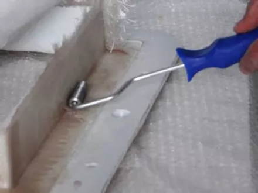
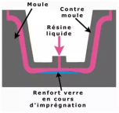
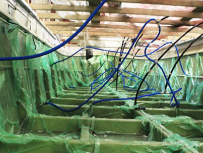

Mise en oeuvre
Les moules
La stratification
Cette opération consiste à réaliser "un millefeuille" de tissus, imprégnés de résine de l'épaisseur recherchée.
Différentes méthodes coexistent.
Moulage au contact
Sur un moule on vient appliquer alternativement nappes de tissus et couche de résines au rouleau. Ces étapes s’appellent l’imprégnation.
Une rouleau "ébulleur", utilisé lors de la pose de chaque strate permet de chasser les bulles d'air qui seraient emprisonnées.

Moulage par projection
C'est une mécanisation de la méthode précédente.
Un pistolet projette une mélande de fibre
Injection sous pression

Moulage sous vide
